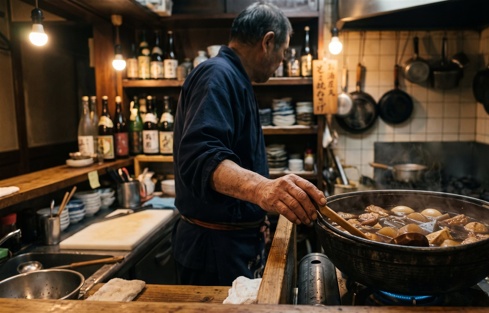

コミヨホウ ／ 記事
猛暑日・寒波の日に、客足はどう動くか
昼と夜を分けて「気温の係数」を出す
暑すぎる日と、寒すぎる日。雨と違って、客足が減るとは限りません。昼は減って夜は増える、人数は減るのに冷たい品だけ伸びる、といった動き方をします。自分の店の「気温の係数」の出し方を、計算例つきでまとめました。
「こう暑いと、誰も外に出てこない」「こう寒いと、みんなまっすぐ帰る」。猛暑の日や冷え込んだ日には、こんな言葉が出ます。
ただ、振り返ってみると、暑い日の夜に冷たい一杯を求めるお客さんで混んだ覚えもあるのではないでしょうか。暑さ寒さは、雨のように「落ちる」と決まっているわけではありません。
この記事では、暑い日・寒い日の客足を数字にする方法をまとめます。考え方は雨の日係数の記事と同じですが、気温ならではの注意点が3つあります。
気温は、雨と3つの点で違う
- 向きが決まっていない……減る店もあれば、増える店もある。同じ店でも、昼と夜で逆になることがある
- 回数がたまりにくい……飛びぬけて暑い日・寒い日は、雨の日ほど多くない
- 人数だけでなく、頼まれる品が動く……冷たい品と温かい品の出方が変わる
この3つに合わせて、手順を少しだけ変えます。
手順1｜「暑い日」「寒い日」の線を決める
まず、何℃からを特別な日として扱うかを決めます。
暑い方は、気象庁の言葉がそのまま使えます。最高気温が35℃以上の日が「猛暑日」です。一方、寒い方の「寒波」には、何℃以下という決まった線がありません。そこで、自分で線を引きます。天気予報を見ればすぐ判断できる線にしておくのがこつです。
線の引き方（例）
- 暑い日……最高気温が35℃以上（猛暑日）
- 寒い日……例えば、最高気温が5℃に届かない日
- 雪が積もった日……寒い日とは別に数える
線は地域に合わせて動かしてください。35℃を超える日がほとんどない町なら、33℃で引いた方が使える数字になります。
気温を毎日ノートに書く必要はありません。記録を続ける工夫の記事で書いたとおり、項目を増やすと続かなくなります。過去の気温は、気象庁のホームページにある「過去の気象データ検索」で、日ごとに調べられます。夏や冬が終わってから、線を超えた日に印をつけるだけで足ります。
手順2｜同じ季節の「ふつうの日」と比べる
昼は定食、夜は居酒屋として営業している店を例にします。まず昼です。猛暑日の客数を、同じ夏の、同じ曜日の平均で割ります。
春や秋の数字とは比べません。季節そのものの違いが混ざって、暑さの影響だけを取り出せなくなるからです。雨の日と、お盆のような特別な時期も外しておきます。
| 猛暑日 | 曜日 | その曜日の夏の平均 | 当日の昼の客数 | 割合 |
|---|---|---|---|---|
| 1日目 | 水曜 | 30人 | 25人 | 0.83 |
| 2日目 | 木曜 | 32人 | 27人 | 0.84 |
| 3日目 | 火曜 | 28人 | 22人 | 0.79 |
| 4日目 | 金曜 | 36人 | 30人 | 0.83 |
| 5日目 | 水曜 | 30人 | 23人 | 0.77 |
（0.83 ＋ 0.84 ＋ 0.79 ＋ 0.83 ＋ 0.77）÷ 5 ＝ 0.81 （猛暑日の昼はおよそ2割減）
「水曜の猛暑日」「金曜の猛暑日」と曜日ごとに分けると、1〜2回ぶんしか集まりません。そこで、先に1日ずつ割合にしてから、まとめて平均します。 こうすれば、曜日がばらばらでも1つの係数にできます。
夜も同じやり方で出します。この店の夜は 1.13 になりました。昼は2割減るのに、夜は1割ほど増えています。
同じ猛暑日でも、昼と夜で向きが逆（水曜の例）
もちろん、これはこの店の例です。日差しの中を歩いて来てもらう立地か、駐車場が目の前か、近くに勤め先が多いかで、向きも大きさも変わります。夜も減る店、昼がむしろ増える店もあるはずです。向きを決めつけずに、自分の記録で確かめてください。
何回ぶん集まれば信じていいかは、雨の日の記事に書いた目安と同じです。3回で傾向、5回以上で係数として使えます。猛暑日がひと夏に5日たまらない年は、「0.8くらい」と粗く使い、翌年の夏に日数を足して確かめてください。
手順3｜人数だけでなく、品の比率も見直す

気温で変わるのは、人数だけではありません。頼まれる品が変わります。 猛暑日の伝票を2〜3日ぶん取り出して、品ごとの注文数をその日の客数で割ってみてください。平日と週末の記事で使った「出数比率」と同じ出し方です。
| 品目（昼） | ふつうの日の比率 | 水曜 30人 | 猛暑日の比率 | 猛暑日 24人 |
|---|---|---|---|---|
| 唐揚げ定食 | 0.4 | 約12食 | 0.4 | 約10食 |
| 冷やしうどん | 0.2 | 約6食 | 0.35 | 約8食 |
| 煮魚定食 | 0.3 | 約9食 | 0.2 | 約5食 |
客数は2割減。でも、品目ごとの動き方はばらばら
もし全部を0.8倍にしていたら、冷やしうどんは6食×0.8で約5食しか用意できず、3食足りません。煮魚は9食×0.8で約7食を仕込み、2食余ります。
気温で比率が動きやすいもの（例）
- 暑い日……冷たい麺や冷たい飲み物が伸び、煮込みや鍋ものが落ちることがある
- 寒い日……鍋ものや汁もの、燗酒が伸び、冷たい品が落ちることがある
- 飲み物まわり……暑い日は、食材より先に氷や樽の残りを確かめておく
これも店によって違います。真夏でも名物の煮込みが落ちない店は、いくらでもあるはずです。全品やる必要はありません。日持ちしない上位3品だけ、比率を並べてみてください。
寒い日は、雪と分けて数える
寒い日も手順は同じです。冬のあいだの、同じ曜日の平均と比べます。
水曜の昼 冬の平均 30人 ／ 最高気温5℃未満の日 27人 → 27 ÷ 30 ＝ 0.90
この店では、寒い日は夜の方が大きく落ちました。暑い日とは逆です。
気をつけたいのは、「寒いだけの日」と「雪で足元が悪い日」を混ぜないことです。雪や路面の凍結は、寒さとは別の理由で客足を止めます。混ぜて平均すると、晴れて冷え込んだだけの日まで、仕込みを減らしすぎてしまいます。特記事項に「積雪」と一言書いて、計算は分けておきます。
予報を見て、係数を掛ける
係数ができたら、使い方は簡単です。前の日に、明日の予想最高気温を見ます。線を超えていたら、曜日の平均に係数を掛けます。
うちの店の「気温の係数」早見表（例）
昼 30人 × 0.81 ＝ 約24人 → 冷やしうどん 24人 × 0.35 ＝ 約8食
夜 24人 × 1.13 ＝ 約27人
予報の気温は、当日になって少しずれることもあります。34℃のように線のすぐ手前の予報なら、係数を半分だけ効かせる（0.81ではなく0.9にする）くらいの扱いで構いません。
よくある3つのつまずき
1. 1日の合計で見てしまう
昼の減りと夜の増えが打ち消し合って、何も起きていないように見えます。昼と夜を分けて数えます。
2. 春や秋の数字と比べる
季節の違いが混ざります。猛暑日は同じ夏の日と、寒い日は同じ冬の日と比べます。
3. お盆や年末年始を混ぜる
帰省や休みで、気温とは関係なく客足が動く時期です。記録に印をつけて、平均の計算からは外しておきます。
それでも、手が回らないとき
線を決めて、割合を出して、品の比率を見直す。夏と冬の年2回で済む作業ですが、忙しい季節のあとに伝票を数え直すのは、なかなか腰が上がらないものです。
気温や天気による増減の計算を任せたい場合は、そういう仕組みを使う手もあります。私たちが作っているコミヨホウは、気象庁の予報を毎日自動で取りこみ、明日の来店みこみと仕込みの目安を、毎夕LINEに1通お届けしています。
ただ、猛暑日だった日に印をつけて、昼と夜の割合を出すだけでも、次の夏の仕込みは変わります。 まずは気象庁のホームページで、自分の町の最高気温が35℃を超えた日を調べるところから始めてみてください。
コミヨホウについて
客足を動かす8つの要因をAIが毎日自動で集めて計算し、「明日の来店みこみ・売上みこみ・仕込みの目安」をLINEに1通お届けするサービスです。POSレジとの連携は不要。最初の30日は無料（カード登録なし）で、続ける場合だけ月額5,500円（税込）。解約はいつでも違約金なしです。
コミヨホウの詳細を見る →